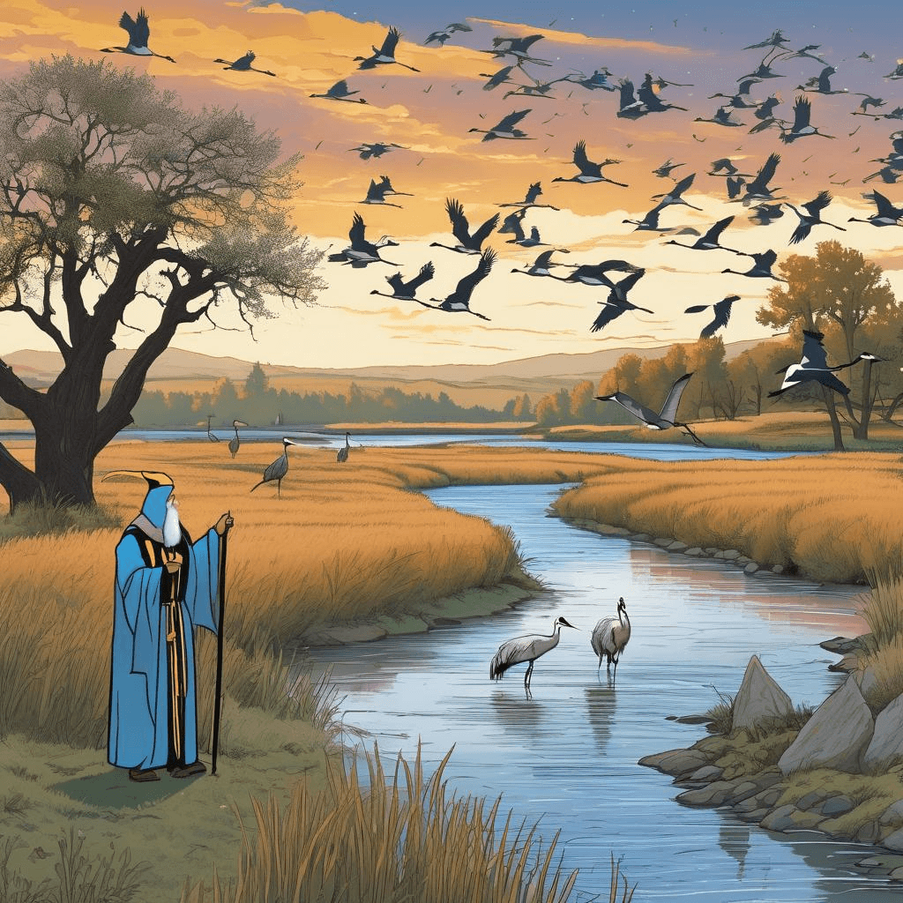
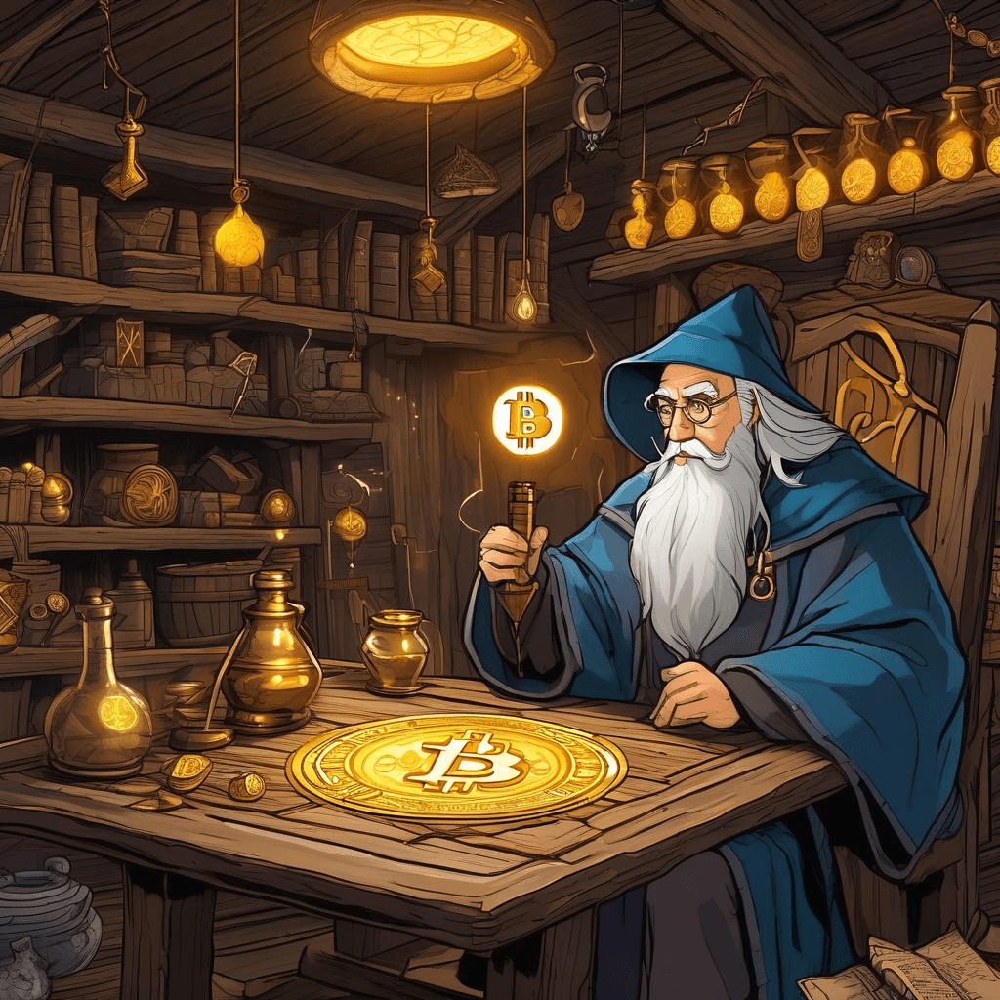
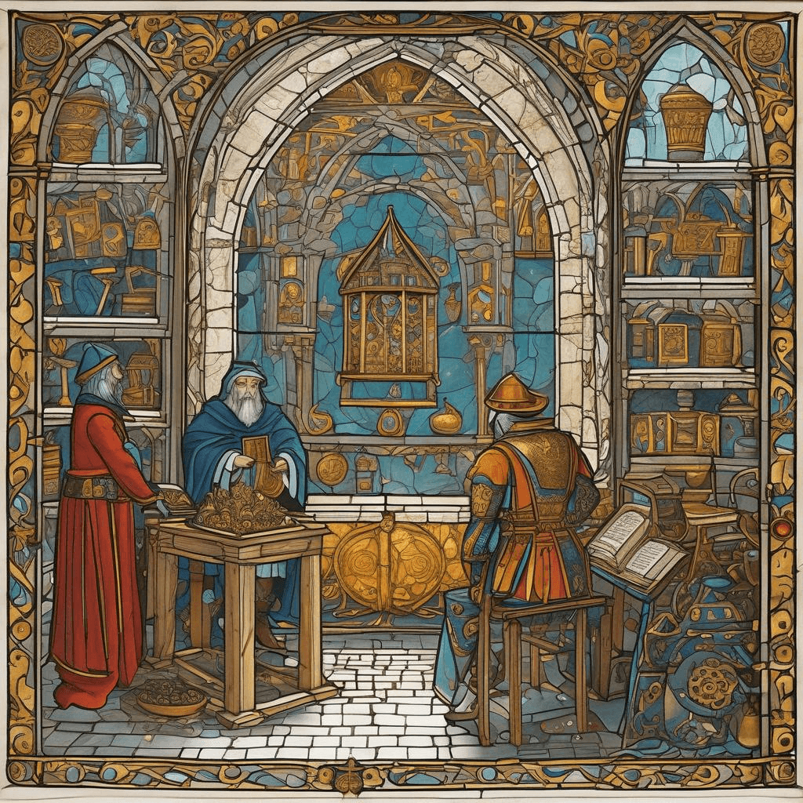

Chronicle Entry
February 4, 2026
Upon this Fourth Day of February, Grand Magus Alistair brings word of wondrous migrations and the eternal dance between ancient wisdom and newfangled contraptions! Intelligence arrives from our neighbors in the Nebraska territories of half a million sandhill cranes staging along the Platte River, their noble journey northward creating a spectacle that draws pilgrims from across the realms. Verily, these magnificent birds follow routes their ancestors have traveled for millennia, requiring not the guidance of scrying devices or digital enchantments, merely the wisdom encoded in their very essence! Meanwhile, here in the Kingdom of Dakota, our year-round coyote season continues apace, requiring no permits nor licenses, a testament to sensible governance that trusts its subjects to manage these cunning predators without bureaucratic meddling.
The mystical token known as Bitcoin has ascended to seventy-three thousand three hundred and fifty-one golden pieces, proving once again that decentralized sorcery remains superior to the machinations of central banking wizards! Whilst various tech merchants peddle their wares, including one called Lunar Energy that raised two hundred thirty-two million coins to deploy household lightning-capture devices for the power grid, I confess skepticism at such enterprises that promise to transform every cottage into a node of mystical energy distribution. The free market shall determine which innovations prove worthy and which vanish like morning mist!

✨ Crane Migration Pilgrimage
Most curious are reports of a courtship facilitation service called Tinder seeking to employ artificial golems to combat what they term swipe fatigue amongst lonely hearts! In my day, courtship required actual conversation, perhaps at a church social or harvest festival, not endless judgments based upon painted portraits in a scrying glass. Yet I suppose even romantic pursuits must adapt to these strange times, though I wager the old methods produced more lasting unions.

✨ Bitcoin Lightning Alchemy
The realm of ElevenLabs, purveyors of voice conjuration spells, has secured five hundred million in merchant backing at a valuation of eleven billion golden pieces! Whilst such sums stagger the imagination, one must wonder if these voice simulacrums can truly replicate the gravitas and commanding presence of a genuine Grand Magus, or if they merely produce hollow echoes of authentic wisdom. Methinks the market grows frothy when such valuations arise, but time shall render its verdict!

✨ Courtship Golems Scrying